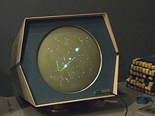

Bienvenue sur
L'Invention du Jeu Vidéo
Découvrez l'histoire et l'évolution des jeux vidéo, des premières expérimentations aux consoles modernes. Explorez les technologies qui ont façonné cette industrie fascinante.

L'invention du jeu vidéo remonte aux années 1950, période où des chercheurs universitaires ont commencé à explorer les possibilités offertes par les technologies émergentes. En 1958, le physicien William Higinbotham a créé "Tennis for Two", un jeu interactif affiché sur un oscilloscope, permettant aux visiteurs de simuler une partie de tennis en temps réel.
En 1952, Christopher Strachey, directeur du laboratoire de programmation de l'Université d'Edimbourg, a développé "OXO", une version électronique du jeu de morpion, marquant l'un des premiers jeux informatiques à utiliser un affichage électronique.
Ces premières expérimentations ont jeté les bases de l'industrie du jeu vidéo, qui allait connaître une croissance exponentielle dans les décennies suivantes, captivant des millions de joueurs à travers le monde.


Les premières consoles de jeu, telles que la Magnavox Odyssey et l'Atari Pong, ont marqué une révolution dans le divertissement domestique des années 1970.
La Magnavox Odyssey, lancée en 1972, est reconnue comme la première console de jeux vidéo domestique. Elle se connectait directement au téléviseur et proposait des jeux simples comme le tennis et le hockey. En raison de ses capacités graphiques limitées, la console affichait uniquement quelques blocs blancs et une ligne verticale à l'écran. Pour enrichir l'expérience visuelle, Magnavox incluait des superpositions de couleurs translucides à placer sur l'écran.
L'Atari Pong, lancé en 1972, est l'un des premiers jeux vidéo commerciaux à succès. Inspiré du jeu "Table Tennis" de la Magnavox Odyssey, Pong a été développé par Atari et est rapidement devenu un phénomène culturel, contribuant à populariser les jeux vidéo auprès du grand public.
L'évolution technologique a métamorphosé les jeux vidéo, les transformant en expériences immersives et interactives. Des graphismes en 3D réalistes à la réalité virtuelle, les avancées constantes permettent aux développeurs de créer des mondes virtuels captivants, offrant aux joueurs des aventures inoubliables et une immersion totale.
Des graphismes en 3D aux mondes virtuels immersifs
Dans les années 1990, l'introduction des graphismes en 3D a marqué un tournant majeur. Des jeux comme Super Mario 64 ont ouvert la voie à des environnements tridimensionnels interactifs, offrant une profondeur et une liberté de mouvement inédites.
L'émergence de la réalité virtuelle
Parallèlement, la réalité virtuelle (RV) a émergé, offrant une immersion totale. Des casques comme l'Oculus Rift et le HTC Vive permettent aux joueurs de s'immerger dans des univers virtuels, interagissant avec l'environnement de manière naturelle.
Navigue à travers le site pour découvrir l'histoire complète des jeux vidéo, des anecdotes intéressantes, et même essayer quelques mini-jeux.